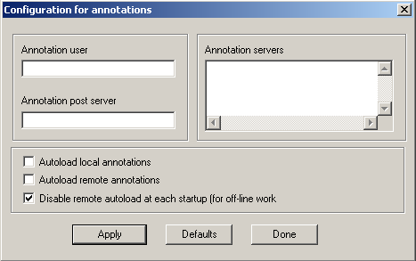
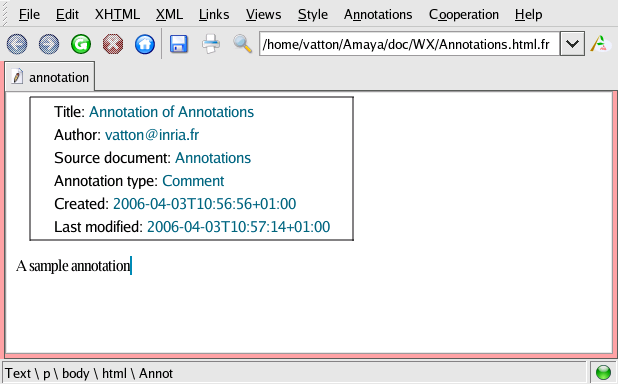

Documentation update managed by WinWriters
This manual presents the Amaya user interface for Unix and Windows platforms. Your user interface could be a little different depending on your system and unique configuration. It is not a complete user manual. Its purpose is only to help users to discover the main features of the software. This document is organized as a book and you can use the Make Book command to build and print the whole manual.
Many commands in Amaya are the same as those provided by common word processors and editors. They are not presented here. Only Amaya specific aspects are described.
To start Amaya on a Unix platform, type:
amaya [-display host] [document]
The parameter [-display host] is optional. It defines the remote host screen where Amaya should display Web pages. If you omit this parameter, Amaya displays on the local host screen.
The parameter [document] is optional. It is the file name or
the URI of the first document Amaya should display when
starting. If you omit this parameter, a Amaya displays a default document.
The default document could be your home page (see how to configure your Home Page) or the Amaya Welcome
page.
You can use Amaya to open and browse local and remote Web documents. You can also use it to create and modify Web pages.
Browsing with Amaya is similar to browsing with other Web browsers. For example, the Amaya button bar includes stop, back, next, refresh, home, save, and print buttons. There is one important difference: you double-click a link to activate it. See Activating a Link for more information.
Unlike other browsers, Amaya also provides tools for editing web pages. See these topics for more information on editing:
By default, Amaya begins in editor mode. In this mode, you can edit the current document as well as browse in the window.
The button bar displays the  button when the window is in editor mode, and the
button when the window is in editor mode, and the  button when the window is
in browser mode. In browse mode, you can only browse and fill in forms.
button when the window is
in browser mode. In browse mode, you can only browse and fill in forms.
To toggle the window from editor mode to browser mode, click the button. Click the button to return to
editor mode. You can also select this mode by choosing Editor
Mode from the Edit menu, or by using a keyboard
shortcut (the default is Shift-Control-*).
Note:
You can set the mode independently for each document window.
Amaya reads HTML and XHTML documents differently:
Because the default charset is different for HTML and XHTML documents, authors often create documents using the incorrect charset. For example, consider an XHTML document that uses ISO-Latin-1 but does not provide information about the charset. When the XML parser analyzing the document encounters a character that does not match a valid UTF-8 character, the document is considered to be not well formed. Parsing stops and Amaya displays an error message that proposes either to reload the document as an HTML document or to show parsing errors. If show parsing errors is selected, Amaya activates the Reparse in HTML option on the File menu. Choose this option to set the document's charset to ISO-Latin-1 and re-open the document so it can be properly parsed. Amaya considers the reopened document to be modified (because a charset was added), and you can save it.
Access keys provide shortcuts for moving the cursor to a form field, an area, or a link. Such access can be crucial to people with motor disabilities, but there are other conditions where it could be necessary or useful.
When developing a web document, you can associate the
accesskey attribute with the following elements:
AREA, BUTTON, INPUT,
LABEL, LEGEND, and TEXTAREA.
For example, if you associate the accesskey attribute with a
link in a document using accesskey="n" or
accesskey="N", the command Alt-accesskey
(Alt-n or Alt-N) will activate that link. If you
associate the accesskey attribute to a form element, pressing
Alt-accesskey moves the focus to that element (or to the following element if
associated with a LABEL and LEGEND element).
Access keys overwrite Amaya shortcuts. For example, the Amaya Help pages declare these access keys:
If you have assigned the shortcut Alt-p to an Amaya command, this shortcut won't be accessible when the Amaya Help pages are displayed.
By default, Amaya uses the Alt key as the modifier for access keys. However, you can change this default using theSpecial > Preferences > Generaldialog box. You can choose the Control key instead of the Alt key for a modifier, or you can disable the access keys handler.
Amaya creates a history list to keep track of the pages you have viewed in the current session. You can move backward or forward through pages in the history list in several ways:
File menu |
Choose Back from the File menu to view the previous page. Choose Forward from the File menu to view the next page. |
Keyboard shortcuts |
Unix: Press Alt-b to view the previous page. Press Alt-f to view the next page. Windows: Press Alt-left-arrow to view the previous page. Press Alt-right-arrow to view the next page. |
Button bar |
Click the Click the |
Target anchors are pieces of text that have been given an ID or name attribute. They identify possible targets for links.
So that you can easily recognize targets, you can turn on the display of
target icons  . These
icons are not part of the document and can be displayed or hidden in two
ways:
. These
icons are not part of the document and can be displayed or hidden in two
ways:
For information on working with target anchors, see:
Links are normally displayed as blue or underlined text. Because Amaya is both a browser and an editor, you get different results when you single-click, double-click, or right-click a link.
Note:
This behavior can be changed through the General
Preferences dialog under the
Special>Preferences menu. By changing the
Double click activates link option, you can browse
documents with a simple click as you would in a traditional Web browser.
However, you will not be able to edit a link by clicking within it.
You can open both local or remote documents in several different ways:
You can also use these steps to create a new local document.
To open a document in the same window:
Note:
You can alternately use a keyboard shortcut to open a document. For
Windows, press Control-o. For Unix, press Control-x
Control-f.
To open a document in the different window:
Note:
You can alternately use a keyboard shortcut to open a document. For
Windows, press Control-Shift-o. For Unix, press Control-x
Control-f.
To open a file from the Open field:
Many commands in Amaya act on the current selection. You can make a selection using the keyboard or the mouse, as described below.
No matter how you make the current selection, Amaya displays the type of the first selected element at the bottom of the window, followed by the types of the enclosing elements in the structure. This may be helpful when the document structure is complex.
For example, selecting a word in this sentence means that the status bar reads
text \ p \ body \ html \ Document
meaning that the thing selected is some text within a p
element (which is within the body etc)
Selecting this structure element (for example click on the word structure, then press esc/f2) gives
strong \ p \ body \ html \ Document
Shift key.Esc key on Unix/Mac or the F2
key on Windows to select the parent element in the document
structure. Press the key several times to select containers (and
everything in them) up the structure towards the root.Control - (minus key) to select a child
element.Control k to select the next element at the same
level, or at the level of the parent element if there is no next or
previous child of the current level.Control j to select the previous element at the
same level, or at the level of the parent element if there is no
previous child of the current level.Left, Right, Up, and
Down). If there is no visible selection in the document
window, Amaya generates a new selection at the top left corner of the
window.Shift key while pressing the four arrow keys
(Shift-Left, Shift-Right,
Shift-Up, and Shift-Down).Home key.End Key.Alt-Enter. If the selection is within a link,
Alt-Enter will activate the link instead of selecting the
current word.Control-Left.Control-Right.Shift-Control-Left.Shift-Control-Right.Control-Up.Control-Down.Control-Home.Control-End.You can also select elements using the Structure view or select images.
The structure view is especially convenient for quickly selecting large elements or groups of elements within a document.
To select an element:
To select a text character or text string within a structure:
To select an attribute value:
To select structure elements using the keyboard:
Esc key on Unix or the F2 key on
Windows to select the parent element in the document structure. Press the
key several times to select containers (and everything in them) up the
structure towards the root.
Control+- (minus key) to select a child element.
Control+k to select the next element at the same
level, or at the level of the parent element if there is no next or
previous child of the current level.
Control-j to select the previous element at the same
level, or at the level of the parent element if there is no previous
child of the current level.Use the following procedures to select an image, or to move the cursor to left or right of an image
To select an entire image:
To place the cursor to the left or right of the image:
Note: When using the arrow keys, the cursor moves from one side of the image, to the image itself (selecting it), and then to the other side.
Amaya can present different views of a document simultaneously. Each view is displayed in a different window so you can clearly see what is happening when you edit complex documents.
The multiple windows can also help you move quickly through a document. For example, if you click a heading in the Table of Contents view, the Formatted view will display the document section you selected.
Six views are available from the Views menu.
|
Formatted view (default) This view is similar to that provided in other graphical browsers. It is a dynamic, direct-manipulation view. At all times it displays the changes you make to the document, in contrast to editors that only provide a series of static snapshots of the document. |
|
Structure view (Views > Show structure) This view shows the actual structure of the document. Each element is represented by its tag name, followed by its attributes on the same line. The elements it contains are represented underneath, next to a blue vertical line that shows the extent of the element. You can directly edit any text displayed in black by clicking and typing. You must use the editing commands to change text displayed in blue. The structure view shows all the elements of the document even those that are not displayed in the formatted view like comments, doctype, processing instructions or the elements of the head section. This view also shows the uri of the namespace used by the author when an element belongs to a namespace that is different from it's parent one's. |
|
Alternate view (Views > Show alternate) This view shows how the document looks when displayed by a text-only browser. It is useful for checking the accessibility of your documents. |
|
Links view (Views > Show links) This view shows a list of all anchors in the document and the elements each anchor contains. You can focus on it when working on hypertext links. |
|
Table of Contents view (Views > Show table of contents) This view shows a list of all headings (Hn elements) in the document. If the document is well structured, it displays an overview of the document. |
|
Source view (Views > Show source) This view shows the actual source code of the document. You can use it to edit the syntax of your document. |
You can open and close any view at any time. However, if you have multiple views open and close the Formatted view, all other views will close automatically.
For more information on views, see:
All views except the Source view are automatically synchronized. When you select characters or elements in one view of a document, Amaya automatically scrolls the other views of the document to show the selected items.
You can edit a document in any view. During editing, the changes you make are displayed only in the active view. When you select a button bar or menu command or click in another location, Amaya updates the other views to display your changes.
Selection and editing commands act always in the document tree. When you select two elements in a view, the selection is extended to the minimum sub-tree that includes these two elements, even if some elements are not displayed in that view. Commands applied to that selection (delete by example) acts on the whole selection.
The Source view is not automatically synchronized. After making a series of edits in the Source view, you must choose File > Synchronize to update the other views of the document. Conversely, when you make changes in any other view, choose File > Synchronize to update the Source view.
When you synchronize a document, Amaya will re-validate it. If you introduced markup errors in the source view, Amaya will recover as well as it can. You should check the document in the Structure or Formatted view after editing in Source view to ensure that synchronization has done what you expected.
When you save a document from the Source view or from the Formatted view (locally or remotely), synchronization occurs automatically. All views reflect the state of the document at the time it is saved.
For more information on views, see:
Amaya can present different views of a document simultaneously. Each view is displayed in a different window.
To close a view:
Amaya can present different views of a document simultaneously. Each view is displayed in a different window. This allows you to clearly see what is happening when you edit complex documents. It is also an aid for moving across a document.
Note: View options are only available from the normal browser view (formatted view).
To open a view:
Show Menu Item |
Keyboard Shortcut |
View Structure |
|
View Alternate |
|
View Links |
|
View Table of Contents |
|
View Source |
|
Note: You can also use Show commands on the Views menu to bring the corresponding window forward when it is in the background.
Amaya allows you to create both local or remote documents. Three types of documents are available:
To create a document:
The commands on the Xhtml and Xml menus, and the corresponding buttons, let you create new elements at the insertion point within the document. To use the commands from the Xhtml and Xml menus, place the cursor at the desired position and choose the element type from theXhtml and Xml menus.
When creating new elements, it is important to select an insertion point, not some text nor a single character: if the current selection is not empty, Amaya tries to transform the selected part into the element type chosen.
Sometimes elements cannot be created at the chosen chosen because of the constraints imposed by the HTML DTD. Amaya then tries to create the element at the closest position. For example, if the insertion point is at the end of the last line of a paragraph when you click on the Heading 2 button , Amaya creates the new heading after the paragraph.
In some other cases, Amaya changes the existing structure for creating the desired element. If the insertion point is somewhere within a list item (li) when you create a second level heading, the list item and its enclosing list are automatically split, in order to create the requested heading at the chosen position and to comply with the HTML DTD.
To edit the document title:
Note:
You can also edit the document title from the Structure view.
When the insertion point is in an empty element, pressing the ENTER key replaces that element by another empty element at the next higher level in the document structure. This feature allows you to create complex, nested structures very quickly.
As an example, consider the following structure:
A paragraph in the first item
To create the above structure:
The ENTER key works in the same way when the insertion point is at the beginning of an element, but it creates new elements before the current element. For example, to add a list item between the first two items in the above structure, place the cursor at the beginning of the second list item, and press the ENTER key twice.
Note: This use of the ENTER key does not apply only to lists and paragraphs, but to all elements. For example, it is very helpful for creating tables.
When a paragraph or another block of text is styled—terminated by an anchor or a character string in bold, italic or other such style—moving the insertion point to the end and typing new text appends characters to the anchor or the styled string.
To exit an anchor or styled element and enter plain text:
To get out of a <pre> or a table:
<pre>formatted,
hitting the Enter key creates a new line in the <pre>. To
create another element, say a paragraph, after the <pre>, you can
use the Types menu and select the type of the element you want to
create.<pre> element with the ESC key (Linux) or the
F2 key (Windows) and to press Enter. This creates a new
paragraph after the <pre> element.This works also for a table: select the whole table and press Enter to create a new paragraph after the table. You can also get out of a table by pressing Enter until you are out of the table.
When you are writing a new document or a new part in a document, you can create elements sequentially by pressing the ENTER (or RETURN) key. The current element is terminated and a new one is created immediately after.
Most often, the new element created is simply a paragraph, whatever the type of the previous element. You can change the element type by selecting the desired type from the Types menu or by clicking the corresponding button.
When a <pre>formatted element is at the end of the document and the cursor is at the end of that element, hitting the Enter key creates a new line in the <pre>. To create another element, say a paragraph, after the <pre>, you have to select the whole <pre> element with the ESC key (Linux) or the F2 key (Windows) and to press Enter.
In the same way, you can create a new paragraph after the table by selecting the whole table and pressing Enter.
When a whole element like <h2> or <li> is selected the Enter key creates a new <h2> or <li> after.
The Types menu enables you to create only elements that
are part of the document <BODY>. To create elements in the
document HEAD, use the Structure menu from the
Structure view. This menu works in the same way as the Types
menu: put the cursor at the desired position and choose the element type from
the Structure menu.
The Structure menu also enables you to create comments, using Comments. Comments are shown only in the Structure view, but they can be inserted at any position in the document.
Some HTML elements are constituted by several other elements of different
types. For instance, a table usually contains a caption
(CAPTION), several rows (TR), and several cells
(TD or TH) in each row.
When Amaya creates such elements, it also creates their components. A table is created with a caption and a row containing a single cell. The insertion point is placed automatically in the first of these components. You can enter the content of that component immediately or later. You can move to the next (empty) component with the mouse or with the arrow keys.
You can edit attributes in two ways:
You can also copy attributesfrom one element to another.
An attribute is not the same thing as element and an attribute cannot be copied by the Copy or Paste options on the Editmenu.
To copy an attribute, you must use the Attributes menu:
All attributes are displayed in the Structure view. Attributes may be displayed in blue or black.
The Attributes menu lists all attributes that can be associated with the selected element. It can be used to create an attribute, change the value of an existing attribute, or delete an attribute.
To edit an attribute:
ismap for an image),
the command is finished. Choosing that attribute in the menu removes
the attribute from the selected element if it is present, or adds it
if not.
align for a paragraph or a heading), Amaya displays a
dialog containing a menu of the available values and three buttons.
href
for an anchor), a dialog opens so you can edit the attribute
value or terminate the command with the Apply
button. To remove the attribute, click the
Delete button.To enter ISO-Latin characters that are not directly available from the keyboard, Amaya uses the standard support provided by the Operating System. An optional multi-key support is also provided for Motif versions and Windows versions.
Amaya provides a mechanism for assigning Keyboard Shortcuts to characters that are not directly available from the keyboard. Some of them are pre-defined:
Control - space. This
character will be saved as an entity ( ).Alt - e.Control - o the
Control - e.Shift - Control - O then
Shift - Control - e.Control - < or Shift -
Control - < (it depends on your keyboard).Shift - Control - >.See the description of two multi-key input methods:
When two methods are available, you choose the method you want to use by selecting Enable multi-key in the General Preferences dialog box, available from the Special menu. When enabled, Amaya activates the optional multi-key support, and deactivates the standard multi-key support.
Amaya provides an optional multi-key input method based on a two-key
sequence beginning with the accent and followed by the letter to be accented.
For example, to obtain an a-tilde (ã), you first press
~ then type a. To obtain a tilde (~),
press ~ twice.
See the table below for the keys used to insert various ISO-Latin characters.
Name |
Code |
First key |
Second key |
Output |
Aacute |
193 |
quote |
<Shift> A |
Á |
Acirc |
194 |
circumflex |
<Shift> A |
 |
Agrave |
192 |
backquote |
<Shift> A |
À |
Aring |
197 |
star |
<Shift> A |
Å |
Atilde |
195 |
tilde |
<Shift> A |
à |
Auml |
196 |
double quote |
<Shift> A |
Ä |
Ccedil |
199 |
backquote |
<Shift> C |
Ç |
Eacute |
201 |
quote |
<Shift> E |
É |
Ecirc |
202 |
circumflex |
<Shift> E |
Ê |
Egrave |
200 |
backquote |
<Shift> E |
È |
Euml |
203 |
double quote |
<Shift> E |
Ë |
Iacute |
205 |
quote |
<Shift> I |
Í |
Icirc |
206 |
circumflex |
<Shift> I |
Î |
Igrave |
204 |
backquote |
<Shift> I |
Ì |
Iuml |
207 |
double quote |
<Shift> I |
Ï |
Ntilde |
209 |
tilde |
<Shift> N |
Ñ |
Oacute |
211 |
quote |
<Shift> O |
Ó |
Ocirc |
212 |
circumflex |
<Shift> O |
Ô |
Ograve |
210 |
backquote |
<Shift> O |
Ò |
Oslash |
216 |
star |
<Shift> O |
Ø |
Otilde |
213 |
tilde |
<Shift> O |
Õ |
Ouml |
214 |
double quote |
<Shift> O |
Ö |
Uacute |
205 |
quote |
<Shift> U |
Ú |
Ucirc |
206 |
circumflex |
<Shift> U |
Û |
Ugrave |
204 |
backquote |
<Shift> U |
Ù |
Uuml |
207 |
double quote |
<Shift> U |
Ü |
Yacute |
221 |
quote |
<Shift> Y |
Ý |
aacute |
225 |
quote |
a |
á |
acirc |
226 |
circumflex |
a |
â |
agrave |
224 |
backquote |
a |
à |
aring |
229 |
star |
a |
å |
atilde |
227 |
tilde |
a |
ã |
auml |
228 |
double quote |
a |
ä |
ccedil |
231 |
backquote |
c |
ç |
eacute |
233 |
quote |
e |
é |
ecirc |
234 |
circumflex |
e |
ê |
egrave |
232 |
backquote |
e |
è |
euml |
235 |
double quote |
e |
ë |
iacute |
237 |
quote |
i |
í |
icirc |
238 |
circumflex |
i |
î |
igrave |
236 |
backquote |
i |
ì |
ntilde |
241 |
tilde |
n |
ñ |
oacute |
243 |
quote |
o |
ó |
ocirc |
244 |
circumflex |
o |
ô |
ograve |
242 |
backquote |
o |
ò |
oslash |
248 |
star |
o |
ø |
otilde |
245 |
tilde |
o |
õ |
ouml |
246 |
double quote |
o |
ö |
uacute |
250 |
quote |
u | ú |
ucirc |
251 |
circumflex |
u |
û |
ugrave |
249 |
backquote |
u |
ù |
uuml |
252 |
double quote |
u |
ü |
yacute |
253 |
quote |
y |
ý |
yuml |
255 |
double quote |
y |
ÿ |
If an ISO-Latin character is unavailable on the standard keyboard, you can
insert the character by pressing the special Compose key
followed by a sequence of two other keys. See the table below for the keys
used to insert various ISO-Latin characters. Note that in Amaya, you can
switch the position of the first key and the second one.
If your keyboard doesn't contain the Compose key, you can
attach it to an existing key such as Alt-Gr with the following
xmodmap command:
keycode 113 = Multi_key
You can place this command in the $HOME/.Xmodmap file (in
Unix), and Amaya will apply it when you will launch your X server.
Name |
Code |
First/Second key |
Second/First key |
Output |
AElig |
198 |
<Shift> A |
<Shift> E |
Æ |
Aacute |
193 |
<Shift> A |
quote |
Á |
Acirc |
194 |
<Shift> A |
circumflex |
 |
Agrave |
192 |
<Shift> A |
backquote |
À |
Aring |
197 |
<Shift> A |
star |
Å |
Atilde |
195 |
<Shift> A |
tilde |
à |
Auml |
196 |
<Shift> A |
double quote |
Ä |
Ccedil |
199 |
<Shift> C |
comma |
Ç |
Eth |
222 |
- |
D |
Ð |
Eacute |
201 |
<Shift> E |
quote |
É |
Ecirc |
202 |
<Shift> E |
circumflex |
Ê |
Egrave |
200 |
<Shift> E |
backquote |
È |
Euml |
203 |
<Shift> E |
double quote |
Ë |
Iacute |
205 |
<Shift> I |
quote |
Í |
Icirc |
206 |
<Shift> I |
circumflex |
Î |
Igrave |
204 |
<Shift> I |
backquote |
Ì |
Iuml |
207 |
<Shift> I |
double quote |
Ï |
Ntilde |
209 |
<Shift> N |
tilde |
Ñ |
Oacute |
211 |
<Shift> O |
quote |
Ó |
Ocirc |
212 |
<Shift> O |
circumflex |
Ô |
Ograve |
210 |
<Shift> O |
backquote |
Ò |
Oslash |
216 |
<Shift> O |
slash |
Ø |
Otilde |
213 |
<Shift> O |
tilde |
Õ |
Ouml |
214 |
<Shift> O |
double quote |
Ö |
Thorn |
222 |
<Shift> T |
<Shift> H |
Þ |
Uacute |
205 |
<Shift> U |
quote |
Ú |
Ucirc |
206 |
<Shift> U |
circumflex |
Û |
Ugrave |
204 |
<Shift> U |
backquote |
Ù |
Uuml |
207 |
<Shift> U |
double quote |
Ü |
Yacute |
221 |
<Shift> Y |
quote |
Ý |
aelig |
230 |
a |
e |
æ |
aacute |
225 |
a |
quote |
á |
acirc |
226 |
a |
circumflex |
â |
agrave |
224 |
a |
backquote |
à |
aring |
229 |
a |
star |
å |
atilde |
227 |
a |
tilde |
ã |
auml |
228 |
a |
double quote |
ä |
brvbar |
166 |
bar (pipe) |
bar |
¦ |
ccedil |
231 |
c |
comma |
ç |
cent |
162 |
c |
slash |
¢ |
copy |
169 |
c |
o |
© |
current |
164 |
x |
o |
¤ |
deg |
176 |
circumflex |
0 (zero) |
° |
eacute |
233 |
e |
quote |
é |
ecirc |
234 |
e |
circumflex |
ê |
egrave |
232 |
e |
backquote |
è |
euml |
235 |
e |
double quote |
ë |
eth |
240 |
- |
d |
ð |
frac12 |
189 |
/ |
2 |
½ |
frac14 |
188 |
/ |
4 |
¼ |
frac34 |
190 |
/ |
3 |
¾ |
hyphen |
173 |
- (minus) |
- |
|
iacute |
237 |
i |
quote |
í |
icirc |
238 |
i |
circumflex |
î |
igrave |
236 |
i |
backquote |
ì |
iexcl |
161 |
! (exclaim) |
! |
¡ |
iquest |
191 |
? (question) |
? |
¿ |
laquo |
171 |
< (inferior) |
< |
« |
macr |
175 |
- (minus) |
circumflex |
¯ |
micro |
181 |
/ |
u |
µ |
middot |
183 |
. |
circumflex |
· |
nbsp |
160 |
<Ctrl> space |
(none) |
|
not |
172 |
- (minus) |
comma |
¬ |
ntilde |
241 |
n |
tilde |
ñ |
oacute |
243 |
o |
quote |
ó |
ocirc |
244 |
o |
circumflex |
ô |
ograve |
242 |
o |
backquote |
ò |
oslash |
248 |
o |
slash |
ø |
otilde |
245 |
o |
tilde |
õ |
ouml |
246 |
o |
double quote |
ö |
ordf |
170 |
a |
_ (underscore) |
ª |
ordm |
186 |
o |
_ (underscore) |
º |
para |
182 |
<Shift> P |
! (exclam) |
¶ |
plusmn |
177 |
+ |
- (minus) |
± |
pound |
163 |
l |
- (minus) |
£ |
raquo |
187 |
> (superior) |
> |
» |
reg |
174 |
<Shift> R |
<Shift> O |
® |
sec |
167 |
s |
! (exclam) |
§ |
sup1 |
185 |
s |
1 |
¹ |
sup2 |
178 |
s |
2 |
² |
sup3 |
179 |
s |
3 |
³ |
szlig |
223 |
s |
s |
ß |
thorn |
254 |
t |
h |
þ |
uacute |
250 |
u |
quote |
ú |
ucirc |
251 |
u |
circumflex |
û |
ugrave |
249 |
u |
backquote |
ù |
uuml |
252 |
u |
double quote |
ü |
yacute |
253 |
y |
quote |
ý |
yen |
165 |
y |
- (minus) |
¥ |
yuml |
255 |
y |
double quote |
ÿ |
Amaya removes insignificant white-space characters when it loads a document unless they must be explicitly preserved. This is true for XHTML, MathML, and SVG documents, as well as MathML or SVG elements included in a HTML document,
The following are considered as insignificant white-space characters:
#xD and #xA)#X9)To preserve all the characters for some elements, use the
xml:space attribute or the PRE element (only valid
for XHTML documents). The possible values for the xml:space
attribute are default and preserve.
default means that an applications' default
white-space treatment is acceptable for these elements. In Amaya, the
default treatment removes the insignificant white-space characters for
all supported DTDs (see above).
preserve indicates that applications will
preserve all the characters, except the first one that immediately
follows the end tag of the element where it is specified, if that element
is an end of line.You apply the xml:space attribute to all elements within the
content of the element where it is specified, unless it is overriden with
another instance of the xml:space attribute.
In an XHTML DTD, the PRE element causes the same behavior as
the xml:space attribute with the value preserve.
Amaya applies white space handling when it loads a document, not during editing. A consequence is that if you type insignificant white-space characters, they will be visible and saved but will be removed the next time the document is loaded. For example, the following source code:
<p>Amaya removes the <strong> insignificant white-space
</strong>when it loads ...</p>
displays as follows during editing:
Amaya removes the insignificant white-space when it
loads...
The text will be saved with that syntax. However, the next time the document is loaded, the text will display as:
Amaya removes theinsignificant white-spacewhen it
loads...
because the leading and trailing spaces of the element
<strong> are considered to be insignificant and are
removed.
The correct source code would be:
<p>Amaya removes the <strong>insignificant
white-space</strong> when it loads ...</p>
You can easily group a set of paragraphs, headings, lists, tables, and so on within a division. To do this, select the elements you want to group, and then select Division (div) from the Xhtml menu.
You can merge successive elements, even if they are not at the same level in the document structure, by using the Backspace and Delete keys. When the insertion point is at the end of an element, use the Delete key to merge; when it is at the beginning of an element, use the Backspace key. In both cases, these keys do not delete any characters; instead they merge elements previously separated by a structure boundary.
Note that when the insertion point is within an element, the Backspace and Delete keys delete the next or previous character as usual.
Simple structure transformations can be achieved using the Types menu. More complex transformations can be obtained by other means.
The Transform command performs complex structure transformations, based on a language that specifies how a given structural pattern can be transformed into different structures. For example, nested lists can be transformed into a table and back again.
The available transformations are defined in the file Amaya/amaya/HTML.trans. Please refer to the document "Use of the file HTML.trans" for a description of the language in which the transformation rules are written.
Additional transformations may be specified in the HTML.trans file. Some transformations are provided in the HTML.trans file as examples.
To use this command:
Amaya displays a menu that lists all the transformations that can be applied to the current selection.
This document is an introduction to the structure transformation mechanism provided by Amaya. It describes the syntax of the transformation language and the way transformations are performed in the editor.
The file amaya/HTML.trans contains the description of
available transformations. This file can be edited during an
Amaya session. It is dynamically parsed when the
transformation procedure is called by the editor,so new transformations can
be added during an editing session.
Warning: As the description of transformations may
contain tags, donotedit the HTML.trans file
with Amaya. You can use any text editor.
Comments begin with!and continue until the
end of the line.
The file consists of a list of transformation descriptions. Each transformation is described by three parts :
:;{
} , each rule terminated by a semi-colon
;The name appears in the Transform menu and identifies the transformation for the end-user.
The pattern describes a specific organization of the elements to be transformed. It acts as a filter over the HTML dtd. The purpose of the pattern is to identify a particular combination of elements to which the transformation can be applied. In a pattern it is possible to express conditions on sequence of tags, on the content of a tag and on the existence and value of attributes.
Formally, a pattern contains HTML tags (possibly with attributes) and some composition operators:
|for choice
,for sibling
+for sequence
?for option
( ) for grouping nodes
The braces { }
define the content of a node.
The symbol * is a token that matches any
element type.
It is possible to rename a tag by preceding it with a name followed by a
colon (:).
The tag may have attributes. If no value is given for an attribute, an element is matched if the attribute is present. If a value is specified for the attribute, an element is matched if the attribute is present and have the specified value.
Examplesof patterns are given at the end of the document.
A rule expresses how some elements identified in the pattern are
transformed. A rule has two parts separated by the symbol
>:
The target tag list is itself divided into two parts separated by a colon
(:):
The generation location path is searched in the leftmost branch of the document tree, starting from the parent of the element matching the highest symbol of the pattern.
In the target tag list, the dot symbol (.)
is used for descending in the tree structure.
If the special token star (*) ends the list
of tags to be generated, the source element tag is not changed, but it can be
moved to a different place in the destination.
If the source tag or the name in the left part of a rules is present more than once in the pattern, the rule transforms all the elements matching an occurrence of the tag in the pattern.
When the user chooses the Transform command from the
Edit menu, Amaya parses the HTML.trans (or the
MathML.trans, etc.) file. Then the selected elements are matched
with the pattern of each transformation. The names of the matched
transformations are proposed to the user in a pop-up menu.
If several transformations with the same name match the selected elements,
the higher-level matching transformation is proposed to the user. If several
transformations match at the same level, the first one declared in the
HTML.trans file is proposed. As a consequence, it is recommended
to specify the transformations with specific patterns before the more general
ones.
Once a transformation has been chosen by the user, the destination structure is built according to the rules while selected elements are traversed.
Finally, the contents of the source elements (text and pictures, but also structured elements) are moved into the produced elements.
This transformation process for HTML documents is fully described in Interactively Restructuring HTML Documents, a paper presented at the 5th international WWW conference in Paris, May 96, by Cécile Roisin and Stéphane Bonhomme.
Merge Lists: (ul{li+})+;
{
li > ul:li;
}
The pattern matches a sequence of unnumbered lists (UL), that contain a sequence of items (LI).
The rule expresses that each time an item is encountered when traversing the matched elements, a new LI tag is created within an UL. When the rule is first applied, the resulting structure is empty, so there is no UL element in which the LI can be created. Therefore an UL is first created, then the rule can be applied.
Table: dl{(dt|dd)+};
{
dt > <table border=1>.tbody:tr.td;
dd > <table border=1>.tbody.tr:td;
}
The pattern matches any Definition List element (dl).
The rules explain how the table is incrementally built when the structure of the selected definition list is traversed :
Remove Table:
table{?caption,?(body:*{(tr{(td{(?cell_content:*)+}|
th{(?cell_content:*)+}
)})+})+};
{
caption>h3;
cell_content>:*;
}
The pattern matches any table and identifies the content of each cell of the table (cell_content).
The second rule expresses that the contents of each cell have to be moved to the place of the original table.
A target anchor is a piece of text that is referred to by a link (a source anchor). Before creating a link to a text string, you must first turn it into a target anchor.
To create a target anchor:
NAME value by:
or
In both cases, Amaya guarantees that the generated value is unique within the document.
In HTML 4.0, an element can be used as a link target. A target element is
a typed element with an ID attribute to which the link refers (a
source anchor). Before creating a link to such an element, you must first
turn it into a target element.
To create a target element:
ID value. In Formatted view, if Show
Targets is turned on, the target element is preceded by an icon.
In the Links view, icons that identify target anchors are always
displayed.
Note: You can
also directly create the ID attribute by selecting the
element and using the Attributes menu. When you enter an
attribute value, Amaya checks it for uniqueness, and changes the value if
it is already used by another NAME or ID
attribute in the same document. Another method for creating
ID attributes is using Add/Remove IDs from
the Special menu. Selecting this function automatically
adds an ID attribute to all elements of a given name within
the whole document, or within the current selection. Simply type the
element name and click the Add ID button.
To create an anchor that is a link to another document:
To create a link to a target anchor or target element in the same document:
Use this procedure to change the target of a link without changing its anchor.
To change a link:
 . The cursor changes
from an arrow to a hand.
. The cursor changes
from an arrow to a hand.
Note:
You can also manually edit the HREF attribute of the
anchor in the Structure view, or use the Attributes menu
from the Links view.
The Delete Anchor option on the Links menu removes an anchor at the cursor location. To use this command, put the selection or the insertion point anywhere within the anchor to be removed, and choose Delete Anchor. The anchor is removed, but its content remains.
Amaya does not contain a separate table editor. To Amaya, a table is simply a structure described by the HTML document type definition (DTD) and it is edited as such. The same commands apply to tables as to other HTML structures, with a few additional ones.
For more information on working with tables, see the following:
To create a new table:
New columns can be easily added to a table using the Enter key.
To add a new column to a table:
To create a new row:
To create a new tbody:
tbody above the existing table, click at
the beginning of a cell. To create a new tbody below the
existing table, move the cursor to the end of a cell.tbody.When you delete a cell in a column that becomes empty, Amaya deletes the column automatically. You can also delete a column without first removing its content.
To delete a column from a table:
Without useful alternative text for images, many web pages become difficult or even impossible to navigate, and users are left "feeling their way in the dark."
To prevent this problem, you must provide alternative text for elements such as images and other multimedia objects. The alternative text is usually presented instead of the image by a browser with a voice output system, or on a Braille display used by many people who are blind. It is also common for users with low-quality connections to request the alternate view, because text is transmitted much faster than images.
The alternative text should replace the image in function as well. For example, if you use the image as an icon that links to a reference point, then the title of the reference itself is a good alternative text.
There are cases where an image is used for purely visual effect, and does
not add any information value to the page. In this case, it is appropriate to
use a blank alternative text, although you must still define it by entering
two double quotes for the alternative text (for example,
alt="").
When the image conveys important information that is not available from
the text of the document, you must provide a description of the information.
The longdesc option (Attributes > longdesc)
enables you to link a description to the image. This description can be a URI
(a separate document), or named part of the current document.
To view how a page might be presented without the images, use Show Alternate (Views >Show Alternate). If the page is spoken by a voice output system, then the alternate view might simply be read out.
To insert an image, choose Image from the
Xhtml menu, click the Image  button, or use the keyboard
shortcut (
button, or use the keyboard
shortcut (Control-t in Windows, Control-i in Unix).
The resulting dialog lets you enter the file name and alternative text ('ALT'
text) of the desired image.
To provide a long description for an image presenting complex information,
you should do so in a separate document and link it by giving the URI as a
longdesc.
This command is also available on the Attributes menu.
To help find an image file you can enter a filter field, and use the filter button, and the dialog will list only the files that match your pattern.
Amaya enables you to use client-side image maps that link an image to one or multiple URIs.
To create a new image map
Note: You can
also insert an image by clicking the icon on the toolbar, or directly from the keyboard
by pressing Control + t in Windows or Control +
i in Unix.
Table 1: Defining shapes
Shape |
Defining the Area |
Circle |
Click the left mouse button to select the position of one corner of the circle. Hold down the button, move your cursor to the opposite corner, then release the button. |
Polygon |
Click the left mouse button at each point that you want to be a corner of the polygon. Right-click to indicate when you have reached the last point. |
Rectangle |
Click the left mouse button to select the position of one corner of the circle. Hold down the button, move your cursor to the opposite corner, then release the button. |
Tip: To see an outline of each existing area in the image map, select Show map areas from the Views menu.
After you have defined an area within an image map, you can move that area somewhere else within the image:
To move the area directly from the keyboard
Control key and click the mouse. This will
highlight the image map area.Control key but continue to hold down the
mouse button. Use the mouse to move the highlighted image area to its new
location.To move the area using the Structure view
Alt + v then Alt + s). The
structure view of the document will open in another window.coords attribute manually. Example:
coords=28,5,55,33.After you have defined an area within an image map, you may need to resize that area.
To resize the image map area directly from the keyboard
Control key and right-click the mouse. This will
highlight the image map area.To resize the area using the Structure view
Alt + v then Alt + s). The
structure view of the document will open in another window.coords attribute manually. For example,
coords=25,29,16 might become
coords=25,28,24.Amaya enables you to use client-side image maps.
To activate an area in an image map
To display the existing areas within an image map
Note: You can also display
existing areas directly from the keyboard by clicking Alt +
V then Alt + M.
Amaya enables you to include mathematical expressions in web pages, using the Mathematical Markup Language (MathML) specification.
Mathematical expressions are handled as structured components, in the same way as HTML elements. Therefore, you can manipulate math expressions in the same way you manipulate other parts of HTML documents. All editing commands provided by Amaya for handling text are also available for math. In addition, there are some other controls for entering mathematical constructs.
For more information on working with mathematical expressions, see the following:
When you type a character string in a MathML element, Amaya parses the string and automatically generates the elements mo (operator), mn (number), mi (identifier), and mtext.
For example, to enter the formula x=2a+b:
x=2a+bUse the Structure view to display the following structure generated by Amaya:
<mi>x</mi><mo>=</mo><mn>2</mn><mi>a</mi><mo>+</mo><mi>b</mi>
If the result is not exactly what you want, select the characters that
were misinterpreted and change their type with one of the commands such as
Plain text (mtext), Identifier (mi), or Number
(mnmo) from the Math submenu of the
Types menu.
Amaya takes care of spacing within math expressions, but in some cases you may need to add some additional space. Move the cursor to the position where you want to insert space and choose Math > Space (mspace) from the Types menu. This creates a default horizontal space. You can then change its width attribute to adjust its size or you can add other attributes (height, depth, linebreak) to change vertical spacing. Refer to the MathML specification for more details.
When entering brackets as in the following expression:
typing the sequence f(x)= would lead to:
Instead, choose Math > Parentheses from the Types menu or select the Parentheses option on the Maths palette to enter the parentheses properly.
You are not required to use the Math menu or palette to create and edit mathematical expressions. You can enter mathematical constructs directly from the keyboard because each item in the Math menu has a keyboard equivalent. These shortcuts are listed on the menu and in the table below. You can also use the keyboard arrow keys to move the insertion point from one math construct to another. The right and left arrows move the insertion point according to the structure of the mathematical expression. For example, in a fraction when the insertion point is at the end of a numerator, the right arrow key moves the insertion point to the beginning of the denominator.
Action |
Shortcut |
New formula (math) |
Ctrl-m Ctrl-m |
Plain text (mtext) |
Ctrl-m Ctrl-x |
Identifier (mi) |
Ctrl-m Ctrl-d |
Number (mn) |
Ctrl-m Ctrl-n |
Operator (mo) |
Ctrl-m Ctrl-= |
Space (mspace) |
Ctrl-m Ctrl-Space |
Character (xxx;) |
Ctrl-m Ctrl-e |
Invisible Times |
Ctrl-m Ctrl-i |
ApplyFunction |
Ctrl-m Ctrl-a |
Root (mroot) |
Ctrl-m Ctrl-r |
Square root (msqrt) |
Ctrl-m Ctrl-q |
Enclose (menclose) |
Ctrl-m Ctrl-c |
Fraction (mfrac) |
Ctrl-m Ctrl-f |
Subscript and superscript (msubsup) |
Ctrl-m Ctrl-b |
Subscript (msub) |
Ctrl-m Ctrl-v |
Superscript (msup) |
Ctrl-m Ctrl-6 |
Under and over (munderover) |
Ctrl-m Ctrl-k |
Under (munder) |
Ctrl-m Ctrl-u |
Over (mover) |
Ctrl-m Ctrl-o |
Parentheses (mrow) |
Ctrl-m Ctrl-p |
Multiscripts (mmultiscripts) |
Ctrl-m Ctrl-s |
Matrix (mtable) |
Ctrl-m Ctrl-t |
You can create and use links in mathematical expressions. These links are represented using a draft version of the XML Linking Language (XLink). Only simple unidirectional hyperlinks are available, but you can associate a link with any part of a formula. For example, the fraction in the formula below is a link to the W3C home page:
Double-clicking any character within the fraction loads the W3C home page.
To create such a link, select a math expression (the fraction in the above example), click the Link button (or choose Create or change link from the Links menu), and click the desired target.
If the target is an expression in a formula, you must first turn the
expression into a target. Select the expression and choose Create
target from the Links menu to create an
id attribute for the target expression.
Amaya provides the same method to create and edit matrices as to edit HTML tables. Similar to tables, a specific command (Delete matrix column) deletes a column in a matrix, even if it's not empty. This command is located at the end of the Math submenu on the Xml menu.
You may want to change the structure of an existing expression, such as appending a superscript or putting parentheses around an expression. To do that, select the expression and enter the new construct with the palette, the Math menu or the keyboard. You can also use Transform on the Edit menu. Select the expression you want to transform and Transform will display a menu with all possible changes.
The following are known Amaya MathML issues:
display, alttext, mathvariant, mathsize, mathcolor,
mathbackground, fontsize, fontweight, fontstyle, fontfamily, color,
linethickness, numalign, denomalign, bevelled, notation, lquote, rquote,
lspace, rspace, largeop, movablelimits, subscriptshift, superscriptshift,
form, width (mspace only), height (mspace only),
depth (mspace only), align, rowalign, columnalign,
frame, framespacing, displaystyle, side, rowspan, columnspan, rowspacing,
columnspacing, rowlines, columnlines.
class, id, and
style attributes are available, with the same semantics as
in HTML: you can associate CSS styles with MathML elements
(class and style attributes) and a MathML
element can be the target of a link (id
attribute).Therefore, SuchThat, DownTee, Or, And, Not, Exists,
ForAll, Element, NotElement, NotSubset, Subset, SubsetEqual, Superset,
SupersetEqual, DoubleLeftArrow, DoubleLeftRightArrow, DoubleRightArrow,
LeftArrow, LeftRightArrow, RightArrow, Congruent, GreaterEqual, le,
NotEqual, Proportional, VerticalBar, Union, Intersection, PlusMinus,
CirclePlus, Sum, Integral, CircleTimes, Product, CenterDot, Diamond,
PartialD, DoubleDownArrow, DoubleUpArrow, DownArrow, UpArrow,
ApplyFunction, TripleDot, DifferentialD, ImaginaryI, ExponentialE,
InvisibleComma, UnderBar, OverBar, ThinSpace, ThickSpace, Hat, OverBar,
UnderBar, prime, Prime.
To create a mathematical expression in a document, move the mouse cursor to the position where you want to insert an expression, and then click the Math button, or choose Math from the Xml menu.
Mathematical expressions can be inserted into a document using either the Math submenu of the Xml menu, or by choosing an expression from the Math palette.
Click the Math button  on the button bar to display the
Math palette. Close the palette by clicking the
Done button.
on the button bar to display the
Math palette. Close the palette by clicking the
Done button.
You can also display the Math menu by clicking the Math item on the Xml menu.
On the Math palette or menu, the first item, New Formula, allows you to create a new formula when the cursor is in a HTML or SVG element, but not within a MathML element.
The Math menu also contains elements which are not
available from the palette. These items include: Plain text
(mtext), Identifier (mi), Number (mn),
Operator (mo). These commands can also change the type of a
single element or a sequence of elements.
The Character (&xxx;) item enables you to enter a
character that is not available on the keyboard. It displays a dialog where
you have to enter the character name (for instance alpha for the Greek
character a).
The next items of the Math menu or palette enable you to create new constructs within a formula. If the insertion point is not in a formula, Amaya first creates a Math element to accept the new construct. The available constructs are:
mroot in MathML:
msqrt:
menclose:
mfrac:
msubsup:
or
msub:
msup:
munderover:
munder:
mover:
mrow:
mmultiscripts:
mtable:
The last item of the Math palette ( ) displays another palette from which you can insert mathematical symbols and greek characters.
MathML structure in a document can be viewed by choosing Show Structure from the Views menu. Choosing this option opens the Structure view, which reveals the main structure of the document, the math elements, and their contents.
Math expressions can be edited in the main view or in the Structure view.
The Structure view is especially helpful to avoid ambiguity. For example, in the equation below, placing the cursor after character“b,” it is not clear whether you wish to add something within the square root or after it.
Selecting (or checking) in the Structure view avoids any misselections. You can also check the status line at the bottom of the main window.
Amaya enables you to include vector graphics in Web pages, following the Scalable Vector Graphics (SVG) specification.
Amaya handles SVG elements as structured components, in the same way as HTML elements. Therefore, you can manipulate SVG graphics in the same way you manipulate other parts of HTML documents.
All editing commands provided by Amaya for handling text are also available for handling graphics. In addition, Amaya includes some additional commands for entering SVG elements.
For more information on working with graphics, see the following:
To create a new SVG element in a document, move the insertion point to the
position where you want to insert it, and then click the
Graphics button. The Graphics button ( ) displays a palette that
stays on the screen until you click Done on the palette.
) displays a palette that
stays on the screen until you click Done on the palette.
The available graphics elements are:
line in SVG,
rect in SVG with no rx or
ry attributes,
rect in SVG,
circle in SVG,
ellipse in SVG,
polyline in SVG,
polygon in SVG,
path in SVG,
path in SVG,
foreignObject in SVG,
text in SVG
When you select a shape in the palette and the selection is in the HTML structure of the document, Amaya creates a new SVG element just at the beginning of the current selection and inserts the selected shape into this new SVG. Amaya generates SVG drawings as blocks, between paragraphs. To display a drawing inline, you must create it between paragraphs then edit the source code to move it.
When the current selected element is a SVG element, the new shape is added to the current SVG drawing. The new shape is added after and can overlap previous shapes.
The creation of a shape requires direct interaction:
You can insert an image within a SVG drawing. Choose Image from the Xhtml menu or click the Insert Image button from the button bar and proceed in the same way as in HTML.
To insert a mathematical expression into a SVG drawing, click the
Math palette when the selection is within an SVG. Amaya will
generate a SVG foreignObject to embed the MathML markup.
After you have created a new SVG graphic, you can move the graphic somewhere else within the document:
To move the graphic directly using the keyboard
Control key and click the mouse. This will
highlight the image map area.Control key but continue to hold down the
mouse button. Use the mouse to move the highlighted graphic to its new
location.To move the graphic by editing the attributes
With Amaya, you can paint (fill or stroke) SVG graphic elements with a single color. The default fill color is black and the default stroke color is transparent, but you can change these values.
There are two ways to change the default fill and stroke value: by editing the SVG attributes from the Attributes menu, or by editing the SVG attribute style with CSS properties
To edit the SVG attributes:
Note: You can use either a hexidecimal number for colors, or use a specific basic color names such as black, white, blue, green, red, pink, purple, violet or yellow.
To edit the SVG attribute style with CSS properties:
fill property.
Note: SVG text is considered as a graphic shape, so the fill property paints the character contents and the stroke property paints the character border. Amaya applies the fill property to characters, but not the stroke property. Therefore, a click with the left mouse button has no immediate effect, while a click with the middle or right mouse button paints the text element.
After you have created a new SVG graphic, you can resize the graphic.
To resize the graphic directly using the keyboard
Control key and right-click the mouse. This will
highlight the image map area.Control key but continue to hold down the
right mouse button. Use the mouse to change the size of the highlighted
graphic.To resize the graphic by editing the attributes
The Style menu enables you to change the appearance of your documents using two different means:
The first entries of the Style menu apply to CSS, while the last two entries apply to HTML elements.
For more information on style sheets or HTML style elements, see:
HTML provides some character-level elements so you can associate style with character strings. Two options on the Xhtml menu enable you to handle these HTML elements:
A document can link to several external style sheets that are downloaded with the document and applied to it.
An external style sheet can apply to multiple documents. When the same style sheet applies to several displayed documents, Amaya loads only one instance of the style sheet.
Any user can define a specific style sheet that applies to all documents
loaded on their system. This style sheet is called the user's style
sheet. It is stored in the user's local environment, in the AmayaHome directory as the local file
amaya.css.
For example, if you prefer to display documents in Helvetica on your screen and print them in small size, you can create a user's style sheet with following CSS rules:
@media print {
body {font-size: 10pt}
}
@media screen {
body {font-family: Helvetica}
}
The first four entries of the Style menu open a dialog that lets you associate a style attribute with the currently selected elements:
In all these dialogs, Default options enable you to remove any corresponding style information for the selected elements.
All modifications made with these dialogs can be viewed immediately in the Formatted and Structure views.
When a style attribute is associated with an element, you can use that element as a model for creating or modifying a style rule by using the Create Rule command.
To create a generic style for an element or class:
Note: You must select only one element and this element must have a style attribute.
style
element, in the document HEAD, and all elements matching the
selector are displayed with the new style.When you create new classes with the Create Rule command, you can associate these classes with some elements in the document.
Amaya displays the selected elements with the style associated with the chosen class.
To associate a class with an element, you can also use the Attributes menu. This menu also enables you to delete a class attribute from an element or to change it (the class attribute is handled like any other attribute).
Two submenus on the Xhtml menu enable you to add HTML elements to your CSS style sheet: Information Type and Character Elements.
The Information Type submenu lists HTML elements that
define abstract styles. Three of these styles are also available through
buttons: emphasis  , strong
, strong  and
and code  .
.
To apply an information type:
The selected character string displays in the chosen style.
The Character Elements submenu enables you to change the style of the text to italic, bold, teletype, superscript, subscript, and so on (these are included to complete the HTML 3.2 implementation).
To apply a character element:
The selected character string displays the chosen style.
The Style Sheets option on the Style menu provides a set of commands which enable you to control external and user's CSS style sheets.
The Open, Disable and Enable commands can be applied to the user's preference style sheet, but the Link and Remove commands apply to only linked CSS style sheets.
A dialog shows the list of CSS style sheets proposed for the Open command. If no CSS style sheet is currently applied to a document, the dialog indicates that there is no CSS file available.
HTML provides some character-level elements that allow you to associate style with character strings. You can also remove any associated style from a character string.
To remove style from a character string
Note: You can also select styles directly from the keyboard. Keyboard shortcuts are listed on the Xhtml > Information Type submenu and in the following table.
Table 1: Style Menu Commands
Style Menu Command |
Keyboard Shortcut |
Related button |
Emphasis (em) |
|
|
Strong |
|
|
Cite |
|
|
Definition (dfn) |
|
|
Code |
|
|
Variable (var) |
|
|
Sample (samp) |
|
|
Keyboard (kbd) |
|
|
Abbreviation (abbr) |
|
|
Acronym |
|
|
Insertion (ins) |
|
|
Deletion (del) |
|
Note: The attributes of all style commands attributed to any character string are removed when you highlight that text and reselect the style commands.
Amaya enables you to save documents either in HTML or text format. You can save both remote and local documents in two ways, using the Save and Save As commands.
In addition, you can change a number of Amaya publishing options using the Publishing Preferences dialog. You open this dialog by choosing Preferences > Publishing from the Special menu.
Amaya does not provide any global view of a set of pages installed on a server. However, you can save files to a remote server in the same way you save local files, using the Save and Save As commands. During these operations, Amaya also saves any newly added images.
You san save your document as text using the Save As command from the File menu. HTML mark-up is replaced by spaces, new lines, and so on. A list of all URIs used in the document is appended to the file.
To save your document as text:
The Save command saves the current document to the
original location. You can access the Save command by
choosing Save from the File menu, clicking
the Save button on the button bar, or by using keyboard
shortcuts (Control-s in Windows; Control-x,
Control-s in Unix). Newly added images are saved in the same directory
automatically; confirmation is only requested when the document name is
unknown.
You can also fetch a document from servers by specifying the server directory name. This is very useful when browsing, but is not supported by the put method. In this case, Amaya detects that the document name is missing and asks you either to use a default name or to complete the request.
Note:
Use the Save As command to save your document to a different
location.
Choosing Save As from the File menu opens the Save As dialog, where you can: save the document as XML, HTML, or as a text file to a local disk or a remote URI; save embedded images into the same document directory or a different location; and transform embedded URIs.
The items in the dialog box, from top to bottom, left to right are used as follows:
/pub/html/welcome.html) or the name of a remote URI
(for example, http://www.w3.org/pub/WWW/Welcome.html).
Note: Usea
complete path for the URL. You should also make sure that you have the
rights to do a PUTmethod if it is a remote location. Refer
to the page on configuring your server to
accept the PUT method or ask your Web administrator.
http://www.w3.org/pub/WWW/Welcome.html and the
images location is "Images", an image "W3C.png" contained in the
document is stored at the URI http://www.w3.org/pub/WWW/Images/W3C.png
and the HTML file is modified to reference it as:
<img src="Images/W3C.png">
This is similar in the case of a document location on the local file system.
http://pub/WWW/Images, the image is stored at
http://www.w3.org/pub/WWW/Images/W3C.png and the
corresponding HTML file is modified in the following way:
<img src="Images/W3C.png">
Several buttons are at the bottom:
http://... destination) to check whether such a document
already exists.
Amaya can print documents with or without CSS style sheets, on both Unix and Windows platforms.
Important: On Unix platforms, Amaya can only generate a Postscript description, so you must have a PostScript printer or use an application to translate the PostScript into your specific printer language.
You can print a document in three ways:
 button on the
button bar. On Unix platforms, this is a shortcut to the
Print command. On Windows platforms, this is a shortcut
to the Setup and Print command, due to a problem with
the use of DLLs on Windows 95.
button on the
button bar. On Unix platforms, this is a shortcut to the
Print command. On Windows platforms, this is a shortcut
to the Setup and Print command, due to a problem with
the use of DLLs on Windows 95.For more information on printing with style sheets, see About Controlling Printing with CSS.
This command prints the current document with the default printing parameters or with the values previously set using Setup and Print.
On Windows platforms, the first time you launch the Print command, the standard Windows dialog is opened to verify that the default printer is correct.
The Setup and Print command allows you change the printer and toc/page options. Depending upon your operating system, some parameters and options are reset to their default value when you browse another document. This effect depends on each platform.
Amaya does not print links as underlined. To make this happen, add the following line to your user style sheet (amaya.css, located in the Amaya home directory):
@media print {a:link {text-decoration: underline} ... }
Amaya supports the CSS page break property page-break-before:
always. When you attach this property to a specific element using an
attribute style, Amaya generates a page break before that element. When you
attach this property to an element type within the style element of the
document or within an external CSS style sheet, Amaya generates a page break
before each instance of that element.
On Windows platforms, the first dialog when Setup and Print is pressed allows you to make some choices like:
The next dialog, or when the Print command is selected, is the standard Windows dialog, which allows you to choose the other printing parameters.
Under Unix, the Setup and Print command allows you to
In addition, you can:
When the Print command is selected, the printing is done with standard options or previous selected options.
Annotations are comments, notes, explanations, or other types of external remarks that can be attached to a Web document or a selected part of the document. As they are external, it is possible to annotate any Web document independently, without needing to edit that document. From the technical point of view, annotations are usually seen as metadata, as they give additional information about an existing piece of data. In this project, we use a special RDF annotation schema for describing annotations.
Annotations can be stored locally or in one or more annotation
servers. When a document is browsed, Amaya queries each of these
servers, requesting the annotations related to that document. Currently Amaya
presents annotations with pencil annotation icons (  )that are visually
embedded in the document, as shown in the figure below. If the user
single-clicks on an annotation icon, the text that was annotated is
highlighted. If the user double-clicks on this icon, the annotation text and
other metadata are presented in a separate window.
)that are visually
embedded in the document, as shown in the figure below. If the user
single-clicks on an annotation icon, the text that was annotated is
highlighted. If the user double-clicks on this icon, the annotation text and
other metadata are presented in a separate window.

An annotation has many properties including:
Amaya identifies annotations with pencil annotation icons that are visually
embedded in the document. If you single-click an annotation icon, you
highlight the annotated text. If you double-click the icon, a separate window
opens, displaying the annotation text and other metadata.
Below is an example of a pencil annotation icon embedded in the text, with the text highlighted.
An annotation has many properties including:
Amaya can store annotation data in a local file system (often called "local annotations") or it can store annotations remotely, accessed through the World Wide Web (called "remote annotations").
You do not need a server to create local annotations. Local annotations are stored under the user preferences directory, in a special directory called annotations, and can be seen only by their owner (according to the system access right setup). This directory contains three kinds of files:
At any time, you can convert a local annotation to a shared one by choosing Post annotation from the Annotations menu. Once this is completed, the local annotation is deleted because it has been moved to an annotation server.
Amaya can store annotation data in a local file system (often called "local annotations") or it can store annotations remotely, in Annotations Servers accessed through the World Wide Web (called "remote annotations").
You can store remote annotations in annotation servers so that the annotations can be downloaded by anyone having the correct access rights, such as is the case of other HTML documents.
Remote annotations are referred to as shared or public annotations, because they can be seen by other people. If you wish to install your own annotation server, please refer to Annotation-Server-HOWTO.
Most of the commands needed for handling annotations can be found from the Annotations menu shown below. The commands are explained later in this document in the context of users' goals when handling annotations.

You open the Configuration for annotations dialog by choosing Configure from the Annotations menu. The following figure shows the Windows version of this dialog:

The Unix version has a slightly different user interface, but the same functions.
localhost.
Tip:
To temporarily disable an annotation server, add a "-" char before its
URL. Amaya will ignore it.
Note:
If you check the Autoload remote annotations option,
you may experience a delay in resolving the DNS name of the annotation
servers. By default, both these options are turned off.
This version of Amaya supports two kinds of annotations: annotations that apply to a whole document and annotations that apply to a specific point or selection in a document.
After any of these options are performed, an annotation dialog displays the annotation metadata and the body of the annotation.

Currently, the metadata consists of the author's name, title of the annotated document, annotation type, creation date, and last modification date. Some of the metadata fields have special properties:
Below the header area is the annotation body area. It shows the current content and can be edited like any other HTML document.
Saving an annotation is the same as saving any other document with Amaya: choose Savefrom the File menu (or use its equivalent shortcut or button).
Local annotations are saved to the annotations directory and remote annotations are saved to the annotation post server, where they are stored if the user has write access.
To convert a local annotation into a shared one, choose Post Annotation from the Annotations menu to save the annotation to the Post server as defined in the Configuration for Annotations dialog. If this operation is successful, the local annotation will be removed and future Save operations will go directly to that annotation server.
Some commands that can be applied to a document in the Amaya document window also can be applied to an annotation document in the Annotation window. For example, the body of an annotation can be printed by choosing Print from the File menu, or reloaded by choosing Reload document from the File menu.
The Delete command on the Annotation menu enables you to delete an annotation. You can invoke this command from an open annotation window.
To delete an annotation from a document:
The Load Annotations command tells Amaya to load the annotations that are associated with the URL of the current document. Amaya will query the annotation servers, using the settings from the Configuration for annotations dialog, and ask for any relevant annotation.
Annotations can also be loaded automatically whenever a new page is viewed by selecting the Autoload Annotations check box in the Configuration for annotations dialog.
In this version of Amaya, querying an annotation server will return all the annotations that are associated with a document. In a future version, it may be possible to use a customized query menu to refine the query string that is sent to the servers.
Choose Local filter from the Annotations menu to show or hide the annotation icons in the document window. You can show or hide annotations by three types of metadata: the name of the annotation's author, the type of annotation, and the annotation server name.
To apply any of these filters:
Note:
The Annotation Local Filter Menu dialog only shows you the
annotations it knows about at the moment it is opened. If new annotations are
added, you will need to reload the menu again.
The annotation author shows the author's name added to the name of the annotation server where the annotation is stored.
Annotations can be navigated by choosing Show Links from the Views menu. The Link window opens and displays a list of annotations. Annotations in the Link and Document windows are marked with a pencil annotation icon.
The Link window shows all the annotations, without taking into account whether they have been hidden with Local filter on the Annotations menu. As with the document window, a single-click on the annotation selects the annotated text in the document window and a double-click opens the annotation. This is an example of how to navigate from one annotation link to another, even if the annotation cannot be seen by the user because of disabilities or because of the characteristics of the used device.
You can move an annotation to any other part of the same document. This can be used, for example, to handle orphan and misleading annotations. You can move an annotation to either the current selection or to the value of a stored XPointer. It is only possible to move annotations in the same document where they were created.
To move an annotation to a current selection:
To make this change effective, must save the annotation or you will loose the change. You can also move an annotation to the current position of the cursor, without having to make a selection.
You can store the position where you want to move an annotation to, and then move it there. This feature is useful for moving multiple annotations to the same position or for scrolling elsewhere in the document before doing the move.
To move multiple annotations:
Annotations can be seen as comments to pages. The Annotation / Replies feature enhances the collaborative workspace by allowing users to reply to annotations or to other replies.
The Annotations / Reply to annotation menu command lets you to create a reply to an existing annotation or to a reply. You can invoke this command from an open annotation or a reply window. As a result a new reply window opens. The fields in a reply window can be edited just like in an annotation window as explained under Creating an annotation.
When the reply is ready, you can post it to a server with Annotations / Post to Server menu command or save it locally using the File / Save menu command. To delete a reply, you can use the Annotations / Delete menu command.
Replies can also be annotated like any other document, as explained in Creating an annotation.

In the current user interface, all replies related to an annotation are shown at the bottom of this annotation, in a thread section. Each item in the thread gives the date of the reply, the author, and the title of the reply. The content of any of these replies can be retrieved by double clicking the replies in the thread. The selected reply will be highlighted and presented in a reply window. When another selection is made the same reply window is used.
There is no control yet for controlling which replies should be posted. In an ideal world, it should not be possible to save a reply to a reply if the previous reply was not saved in the same server. Likewise, if you delete a reply, you should delete all replies to this annotation. Not doing leads to having fragments of threads that cannot be correctly attached in the thread. For example, let R1 be the reply to annotation A1 and R2 a reply to R1. If you post R1, and let R2 be stored locally, then when you browse A1 and only download its local annotations, you will only see R2. At this point, Amaya does not know that R1 exists, so it assumes that R2 has lost its parent. We identify these "orphan" threads by putting a question mark symbol ? in front of them. If later one, Amaya finds new thread items, for example, if you download R1, Amaya will then sort the thread view, inserting the threads as appropriately. In our example, R2 will become a child of R1, as expected.
As of Release 6.2, the icon used to mark the location of an annotation within an annotated document may be changed by the user.
In release 6.2 the icon that denotes an annotation is chosen as a property of the annotation type. By including an RDF property of each annotation type you wish to use, you select the icon associated with annotations of that type.
The sample configuration that is shipped with release 6.2 associates the following icons:
 |
Advice |
 |
Change |
 |
Comment |
 |
Example |
 |
Explanation |
 |
Question |
 |
SeeAlso |
The property name for adding annotation icons is http://www.w3.org/2001/10/typeIcon#usesIcon. For instance, to specify an icon named file:///home/question-icon.jpg for annotations that have type http://www.w3.org/2000/10/annotationType#Question you would enter the following RDF/XML into a file that Amaya reads at startup is:
<rdf:RDF xmlns:rdf="http://www.w3.org/1999/02/22-rdf-syntax-ns#" xmlns:i = "http://www.w3.org/2001/10/typeIcon#"> <rdf:Description rdf:about="http://www.w3.org/2000/10/annotationType#Question"> <i:usesIcon rdf:resource="file:///home/question-icon.jpg" /> </rdf:Description> </rdf:RDF>
The simplest way to get such RDF loaded into Amaya at startup is to include the file in the config/annot.schemas file in the Amaya program directory. In order to preserve this file so that it will not be overwritten when you install a new version of Amaya, you should copy the config/annot.schemas file into your personal Amaya home directory; ~/.amaya/annot.schemas (on Unix systems) or /winnt/profiles/<username>/amaya/annot.schemas (on Microsoft Windows systems). You may list as many RDF files as you want in annot.schemas. See the comments in the file included in the Amaya kit for more details.
Release 6.2 includes a sample file named "typeIcon.rdf" that declares unique icons for each annotation type declared in the http://www.w3.org/2000/10/annotationType# namespace. To experiment with user-defined icons, it may be easiest to copy this typeIcon.rdf into another directory and modify it. Copy annot.schemas to your Amaya home directory and change the line near the end to point to your revised icon definition file.
To revert to the previous behavior prior to release 6.2, edit the config/annot.schemas in the Amaya installation directory and add a comment character ("#") at the beginning of the line near the end that refers to typeIcon.rdf:
#user-defined icons #http://www.w3.org/2001/10/typeIcon# $THOTDIR/config/typeIcon.rdf
Amaya supports JPEG, PNG, and GIF bitmap graphics formats for icon images. In release 6.2 the icon URI may only be a file: URI; that is, the icon must appear in a local or mounted directory to Amaya. Two special forms of non-file: URIs are supported. If the file path name starts with "$THOTDIR" or "$APP_HOME" then the corresponding Amaya installation directory or personal Amaya home directory is substituted into the pathname.
When you use annotations with live documents (documents whose contents can be modified), you may encounter two kinds of problems: orphan annotations and misleading annotations. To explain these problems, we must first describe how Amaya attaches annotations to documents.
Amaya uses XPointer to indicate where an annotation should be attached to a document. XPointers are based in the structure of the document. To build an XPointer for a selection, for example, Amaya starts from the first point of the selection and walk backwards through the document's structure, until it finds the root of the document. If an element has an ID attribute, Amaya stops building the XPointer and considers the element with the ID attribute value to be the beginning of that XPointer.
For example, if you look at the HTML source for this document, you'll notice that this section is enclosed within a DIV element that has an ID attribute with the value "Issues" Here's an extract of the source code:
<div id="Issues"> <h1>Issues with ....</h1> <p>If you are using...</p> <p>Amaya uses <strong>XPointer</strong>...</p> ... </div>
This XPointer points to the second paragraph:
xpointer(id("Issues")/p[2])
The above XPointer points to the second p element, from the
element parent having an ID attribute with value "Issues".
Note that the use of the ID attribute enables the document author to move the entire reference by the XPointer to another location within the document, without needing to update the XPointer. The XPointer does not depend on the elements that precede it.
An annotation becomes an "orphan" when it can no longer be attached to a
document, that is, when the XPointer does not resolve to any element in the
structure. This happens when a document's structure is modified. Amaya
displays a warning if it detects any orphan annotations while downloading a
set of annotations from an annotation server. All orphan annotations are
visible from the Links view and are associated with an icon that shows a
question mark superimposed on the annotation pencil  .
.
An annotation becomes "misleading" when it points to a wrong piece of information. This problem is common when you annotate a portion of text that may change. In the first release, Amaya does not warn the user if an annotation is misleading. A future release may notify users of the potential for an annotation to be misleading.
As the author of a document, try to use the ID attribute in
strategic places, for example, inside <DIV> and
p elements. For example:
<p id="Amaya">Amaya uses...</p>
An XPointer that points to this paragraph is:
xpointer(id("Amaya"))
Thus, the Xpointer will point to the same paragraph, regardless of its position in the document's structure.
Amaya enables you to automatically associate with or remove an
ID attribute to/from a set of elements by choosing
Add/Remove ID from the Special menu.
Amaya uses different configuration files to get initial values for global parameters, dialogs, shortcuts, window size and position, user's style sheet, and so on. You can change most configuration parameters with various preferences menus.
Amaya uses a number of default directories to store configuration information.
Amaya stores most of the default values and all of the dialog messages in
the config directory. This directory's parent is the one in which Amaya was
installed (the default is Amaya/config on Unix; see the table
below for the location on Windows).
Amaya stores the user preferences and other user configuration files in a directory called AmayaHome. The following table shows where this directory is stored in different architectures:
Architecture |
AmayaHome Directory Location |
Unix |
|
Windows 95/ Windows 98 |
|
Windows NT |
|
Windows 2000 |
|
Windows XP |
|
This directory is preserved even when installing new versions of Amaya. It may contain the following files:
Note:
The amaya.keyboard, amaya.kb, and
amaya.css files are loaded at launch time. If you change them,
you must quit and restart Amaya to take the changes into account.
Amaya stores all the temporary files it creates in a directory called the AmayaTemp directory. The following table shows where this directory is stored within different architectures:
Architecture |
AmayaTemp Directory |
Unix |
|
Windows |
|
Amaya creates files in this directory when browsing remote documents or printing a document. The cache is also stored in this directory. You can change the AmayaTemp and cache directories by using the General and Cache preferences (choose Preferences > General or Preferences > Cache from the Specialmenu).
Amaya always tries to delete the temporary files it creates. However, if Amaya crashes, the temporary files are not deleted. This will not impact subsequent executions of Amaya.
It is useful to invoke menu commands directly from the keyboard. The Thot toolkit enables you accomplish this using an application keyboard shortcuts file. This file defines a list of associations between an invoked command and a keyboard sequence.
The syntax used to define an association is:
Directive = KeySeq ':' IdentCommand ;
KeysSeq = KeySet [ ',' KeySet ] ;
KeySet = [ Modifier ] [ 'Shift' ] Key ;
Key = '<Key>' KeyValue / '<Key>' SpecialKey ;
Modifier = 'Ctrl' / 'Alt' / 'Meta' ;
KeyValue = 'a' / 'b' / ... ;
SpecialKey = 'Escape' / 'Delete' / 'Space' / 'BackSpace' /
'Enter' / 'Up' / 'Down' / 'Left' / 'Right' /
'Home' / 'End' / 'F1' / ... / 'L1' / ... / 'R1' / ... ;
IdentCommand = 'TtcInsertChar(' Char ')' / NAME '()' ;
Char = KeyValue / OctalValue / Entity ;
OctalValue = '\' NUMBER ;
Entity = DecEntity / HexaEntity ;
DecEntity = '&' '#' NUMBER ';' ;
HexaEntity = '&' '#' 'x' HEXADECIMAL ';' ;
To view an example, see the standard files amaya.keyboard (for Unix platforms) and amaya.kb (for Windows platforms), which are located in the Amaya/config directory.
The list of available commands is:
TtcNextChar,
TtcPreviousCharTtcNextWord,
TtcPreviousWordTtcStartOfLine, TtcEndOfLineTtcNextLine,TtcPreviousLineTtcNextElement,TtcPreviousElement,
TtcChildElement, TtcParentElementTtcPageDown,
TtcPageUp,TtcPageTop,TtcPageEndTtcLineUp,
TtcLineDown
TtcNextSelChar,
TtcPreviousSelCharTtcNextSelWord,
TtcPreviousSelWordTtcSelStartOfLine,
TtcSelEndOfLineTtcNextSelLine,TtcPreviousSelLineDoAction.
NextLinkOrFormElement.
PreviousLinkOrFormElement.
New, NewTemplate,
NewCss, OpenDoc,
OpenDocInNewWindow, Reload,
GotoPreviousHTML, GotoNextHTML,
GoToHome, SaveDocument,
SaveDocumentAs, Synchronize,
SetupAndPrint, PrintAs,
CloseDocument, AmayaClose
TtcUndo, TtcRedo,
TtcCutSelection, TtcCopySelection,
TtcPaste, TtcDeleteSelection,
SetBrowserEditor, TtcSearchText,
SpellCheck, TransformType.
CreateBase, CreateMeta,
CreateLinkInHead, CreateScript,
CreateStyle, CreateComment.
ChangeTitle, CreateAddress
CreateParagraph, CreateImage,
CreateHorizontalRule, CreateBlockQuote,
CreatePreformatted, CreateAddress,
CreateDivision, CreateNOSCRIPT,
CreateObject, CreateParameter,
CreateIFrame, CreateBreak("\212")CreateAreaRect,
CreateAreaCircle, CreateAreaPolyCreateForm,
CreateFileInput, CreateImageInput,
CreatePasswordInput, CreateHiddenInput,
CreateLabel, CreateFieldset,
CreateOptGroup, CreateToggle,
CreateRadio, CreateOption,
CreateTextInput, CreateTextArea,
CreateSubmit, CreateResetCreateHeading1,
CreateHeading2, CreateHeading3,
CreateHeading4, CreateHeading5,
CreateHeading6CreateList,
CreateNumberedList, ThotCreateMenu,
ThotCreateDirectory, CreateDefinitionList,
CreateDefinitionTerm,
CreateDefinitionDefCreateInlineMath,
CreateMath, CreateMROOT,
CreateMSQRT, CreateMFRAC,
CreateMSUBSUP, CreateMSUB,
CreateMSUP, CreateMUNDEROVER,
CreateMUNDER, CreateMOVER,
CreateMROW, CreateMMULTISCRIPTS,
CreateMTABLECreateObject,CreateParameterCreateTable,
CreateCaption, CreateTHead,
CreateTBody, CreateTFoot,
CreateRow, CreateDataCell,
CreateHeadingCell, DeleteColumnLinkToPreviousTarget,
CreateOrChangeLink, CreateTarget,
DeleteAnchor.
ShowButtons, ShowAddress,
ShowMapAreas, ShowTargets, ZoomIn,
ZoomOut, ShowStructure,
ShowAlternate, ShowLinks, ShowToC,
ShowSource
TtcChangeCharacters,
TtcChangeColors, TtcChangeFormat,
ChangeBackgroundImage, CreateClass,
ApplyClass.LinkCSS, OpenCSS,
DisableCSS, EnableCSS,
RemoveCSS.SetOnOffEmphasis,
SetOnOffStrong, SetOnOffCite,
SetOnOffDefinition, SetOnOffCode,
SetOnOffVariable, SetOnOffSample,
SetOnOffKeyboard, SetOnOffAbbr,
SetOnOffAcronym, SetOnOffINS,
SetOnOffDEL.SetOnOffItalic,
SetOnOffBold, SetOnOffTeletype,
SetOnOffBig, SetOnOffSmall,
SetOnOffSub, SetOnOffSup,
SetOnOffQuotation, SetOnOffBDO.
MakeBook, MakeID,
ShowLogFile, ConfigGeneral,
ConfigPublish, ConfigCache,
ConfigProxy, ConfigColor,
ConfigGeometry, ConfigLanNeg,
ConfigProfile, ConfigTemplates.
AnnotateSelection,
AnnotateDocument, LoadAnnotations,
PostAnnotation, DeleteAnnotation,
FilterAnnot, ConfigAnnot.
HelpAmaya, HelpAtW3C,
HelpBrowsing, HelpSelecting,
HelpSearching, HelpViews,
HelpCreating, HelpLinks,
HelpChanging, HelpTables,
HelpMath, HelpSVG, HelpImageMaps,
HelpStyleSheets, HelpAttributes,
HelpPublishing, HelpPrinting,
HelpNumbering, HelpMakeBook,
HelpAnnotation, HelpConfigure,
HelpShortCuts, HelpAccess.These dialogs are found under the Preferences submenu on the Special menu. Nine preferences dialogs are available: general, publishing, cache, proxy, colors, Window geometry, language negotiation, profiles, and templates.
Each of these dialogs contains three action buttons:
Button |
Action |
Apply |
Validates and stores the options shown in the menu. |
Defaults |
Restores, but does not save, the default values. Use the Apply button to validate the options. |
Done |
Dismisses the menu. |
To open the General Preferences dialog, choose General from the Preferences submenu.

The General Preferences dialog displays the user directory, the temporary directory, and the default home page. These options are explained below.
Amaya user directory. Applies to Windows platforms only, not shown in the included figure. Specifies the directory where the user preferences are stored.
Note:
You can't change the location of this directory.
Amaya temporary directory.Windows platforms only, not shown in the
figure. Specifies the directory where Amaya stores its temporary files, for
example, while printing a document. If not specified, the default temporary
directory isc:\temp.
Note:
Changing this directory does not erase the previous one. You must remove the
old directory manually. If the cache was located under the
previous temporary directory, a new cache will be created under the new
directory.
Home Page. Specifies the URI that Amaya will load when launched or
when the user clicks the home page button. An example is http://www.w3.org
Note: A complete URI must be used.
The options below can be toggled on or off by clicking the check box next to an option name. A mark in the box indicates that the option is active.
Enable multi-key. Enables or disables the optional multi-key input method, which is based on a two key sequence beginning with the "accent" followed by the "letter". For example, to obtain an 'ã', first press '~' then type 'a'. To obtain a tilde '~', you must press '~' twice. Character sequences used by the standard multi-key input method and the optional multi-key input method are summarized in two different tables.
Show background images. Controls whether background images should be shown. This option is only effective when loading a new document.
Show button bar. Controls whether the button bar should be shown in all document main views.
Show address. Controls whether the address should be shown in all document main views.
Show targets. Controls whether link targets should be shown in all document main views.
Section numbering. Controls whether headings are numbered in all document main views.
Access keys. Specifies the key (Alt or
Control) used to implement the document access keys, or
specifies that access keys defined in documents are ignored.
Two options in the General Preferences dialog are only available under the Unix operating system: Menu Font Size and Double-click Delay. These options are explained below.
Menu Font size. Specifies the font size of all the Amaya menus. This option is only taken into account at launch time.
Double-click Delay. This option enables you to control the delay by which two mouse clicks are classed as a double-click. This option is only taken into account at launch time.
This section of the General Preferences dialog lets you choose the font zoom level and define the dialogue language used in Amaya. These options are explained below.
Font Zoom.You can zoom in and out, document window by document window. Each document (text and images) displayed within a zoomed window will be displayed larger or smaller than its real size according to the current zoom. This option enables you to change the default font zoom for all windows. This change affects only font sizes but not image sizes, and is reflected immediately in all open document windows.
Dialogue language. Specifies the language for all of
Amaya's menus and dialogue messages. The default language is American English
(value: en_US). At the present time, only three alternate
languages are available: English (en), French (fr),
and German (de). When launched, Amaya loads dialogue files
according to the current dialogue language: en-, fr-, or de- files. These
dialogue files are located in the Amaya/config directory.
In Thot, a document is specified according to a schema. In Amaya, the
dialogue messages that are displayed when parsing a document or when saving
it under a specific schema are located in the
Amaya/amaya/HTML.code file, where
the code suffix is a language abbreviation (e.g. enorfr).
This file has 4 sections:
· extension:Not used by Amaya
· presentation:Not used by Amaya
· export: Identifies the text displayed for each translation schema (Save As command)
· translation: Identifies the text displayed for each element and attribute in the Thot HTML structure.
It is possible to adapt Amaya to new ISO-Latin-1 languages by writing corresponding dialogue files. These dialogue files must be located in the same directory (for example, Amaya/config) and must use the correct ISO 639 code as a prefix (it- for Italian, de- for German, and so on). You must also create the specific HTML.code file.
The Publishing Preferences dialog lets you set ...

The options below can be toggled on or off by clicking the check box next to an option name. A mark in the box indicates that the option is active.
Load images. Controls whether images should be laoded. This option is only effective for new loaded documents.
Double-click activates link. Since the first version of Amaya, users double-click a link to activate it. This enables you to choose whether to edit a link or activate it. You can override this behavior by deactivating this option.
Enable FTP. Enables Amaya to follow FTP URLs. This support is experimental and is not yet fully debugged. For example, for FTP URLs needing user authentication, the authentication information is not always memorized. Also, pressing the Stop button during an FTP download may crash Amaya. Because of these problems, this option was added to Amaya so that other developers may help to debug it faster. By default, this option is turned off.
The Publishing Preferences dialog lets you set preferences for ETAGS and preconditions, whether to verify each PUT command with a GET, set the default name for URLs ending with a slash, and enable PUT redirections on specified domains. These options are explained below.

Use the application/xhtml+xml MIME type for XHTML documents. This option, if enabled, associated the new, official XHTML MIME type to all new XTHML documents that are published on the Web. This option is disabled by default because not all servers can handle this MIME type at the time of this release, Note that this requires also a change in your server configuration, if it's not storing somewhere the metadata associated with each document. This option does not modify the MIME type of existing documents: the MIME type that is received is the same one that will be used when saving the document, except if you do a SaveAs operation, of course.
Use ETAGS and preconditions. HTTP/1.1 introduces new headers that avoid the lost updates problem when publishing. With this option, you can detect conflicts when two users are publishing the same document.
Verify each PUT with a GET. If you don't trust your server, this option tells Amaya to retrieve each document as soon as it has been published and compare it with the copy stored in your workstation. If the documents differ, Amaya will warn you.
Export CR/LF (Windows platforms only). This option, if enabled, precedes each line feed by a carriage return.
Default name for URLs finishing in '/'. An HTTP server usually associates URLs that finish in '/' with a default name, for example, Overview.html. This option enables you to specify the default name that Amaya should use when publishing such a URL. Ask your Webmaster for the default name for your server.
Allow automatic PUT redirections on these domains.
According to the HTTP/1.1 specification, PUT operations should not be
automatically redirected unless it can be confirmed by the user, because this
might change the conditions under which the request was issued. You can avoid
having Amaya prompt with a PUT redirection warning by entering the name of
the server's domain to which you are publishing. You may specify one or more
domains, each separated with a space, e.g., www.w3.org
groucho.marx.edu.
Amaya provides a cache through libwww. The cache is enabled by default and is stored in the AmayaTemp/libwww-cache directory. This menu also provides a Flush Cache button for erasing the cache directory.

Enable cache. Activates or deactivates the cache.
Cache protected documents. By default, documents which are protected by a password are stored in the cache. Use this option to override this behavior.
Disconnected mode. Always retrieves documents from the cache.
Ignore Expires: header. Does not expire cache entries.
Cache directory. Identifies the parent directory for the libwww-cache directory. Changing this directory does not erase the contents of the previous one. You must remove it yourself.
Note:
File protection mechanisms prevent the use of NFS (Network File System)
directories for the cache directory as NFS allows reuse by multiple processes
or users. Use a local directory for the cache.
Cache size. Gives the size, in megabytes, of the cache repository.
Cache entry size limit. Gives the maximum size for a cache entry.
You can use this dialog to specify a proxy and a set of domains where the proxy should or should not be used.

HTTP proxy.Identifies the proxy to be used for HTTP requests. You must specify the full name of the server. If the server is running in a port other than 80, then, like in a URL, you need to add a ":" char to the proxy name, followed by the port number. The table below provides two examples.
|
Proxy domain list. Lists space-separated domains where you want to use your proxy. Use the switch buttons to specify if the proxy should or shouldn't be used with this domain list. For example:
harpo.marx.edu zeppo.marx.edu chico.marx.edu^----------------^----> space separated entries
This dialog lets you select the default foreground and background colors for documents. It enables you to control the colors used by Amaya to display the current selection.

The Unix version also provides entries for changing the menu colors. To change menu colors in Windows, you must use the standard Windows configuration control, found in the Control Panel folder.
All these colors may be selected by name, hex code, or RGB format:
If you enter an invalid color, the default colors are used instead. In Windows, you can also select colors with a color palette.
Note:
Color changes will be effective when you open a new document window or when
you reload a document.
Setting or changing colors for links, visited links, and active links is done through the Amaya.css style sheet.
This dialog enables you to save the current window position and size of the different views of a document (formatted, structure, alternate, links, and Table of Contents) or to restore the default values.

The values that are saved are those belonging to the views of the document where you called this dialog. These changes take affect when you open new document windows.
If a document exists in different languages and your server is configured to do language negotiation, you can use this dialog to enter your language preferences (the first one has the highest priority).

Try browsing this press release, which is available in French, English, and Japanese versions. By changing the language negotiation to the ISO codes for the above languages (fr, en, or ja) you can transparently request any of these versions.
In Amaya, a profile defines the look and feel of the user interface. You can use profiles to hide or display the Amaya buttons and menus. This dialog enables you to choose a profile definition file and select any of the profiles proposed by that file. Amaya proposes two editor profiles (editor and mini-editor) and two browser profiles (browser and mini-browser). Any profile change will be effective on the next launch of Amaya.

A template is a model, or skeleton, of a document that you may use for creating your own documents. This dialog enables you to specify the URL of a template server, which may be either local to your workstation or stored on a server.

You must quit Amaya to validate this option. When you launch Amaya again, the File menu will contain a New > From Template option. Choose this entry to open a new document showing the results of browsing the template URL. This page acts as an index to the templates available in your workstation or on the template server. A sample template server is available at http://cgi.w3.org/cgi-bin/createform.pl. For more information, see the Using Templates with Amaya page.
 button to
view the previous page.
button to
view the previous page. button
to view the next page.
button
to view the next page.


{kind=link}